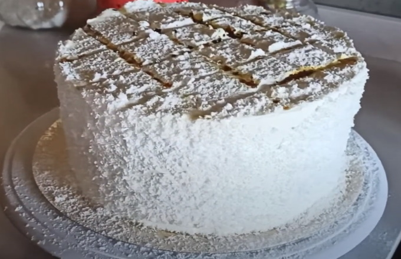

Receta de Poste Balcarce Original
La torta Balcarce es un famoso postre que se originó hace más de 50 años en la ciudad homónima de la provincia de Buenos Aires, Argentina. Se trata de una torta que alterna capas de bizcochuelo, crema chantilly, marrón glasé, nueces, dulce de leche y merengue, un postre ideal para los más golosos.
Nosotros te enseñamos cómo hacer la torta Balcarce original de forma sencilla y con ingredientes fáciles de conseguir para que no te pierdas la oportunidad de probar este delicioso postre. ¡A cocinar!

Ingredientes
- 1 pionono
- 100 gramos de merenguitos
- 400 gramos de dulce de leche
- 300 centímetros cúbicos de crema para batir
- 30 gramos de azúcar impalpable
- 100 gramos de dulce de batata o marrón glacé
- 10 gramos de nueces
- 50 gramos de azúcar impalpable para decorar
Procedimiento
- Para empezar con la receta de la torta Balcarce, primero debes batir la crema con el azúcar impalpable. Señalamos que debes batir hasta que veas que mantiene su forma y no se cae del batidor, pero con cuidado de no pasarte de tiempo y cortarla.
- Mezcla la crema con las nueces picadas y el dulce de batata cortado en cubitos chicos. En este caso, debes utilizar dulce de batata, ya que le aporta un sabor delicioso y el marrón glacé puede ser un ingrediente difícil de conseguir, además, tiene un precio elevado. Esta opción es mucho más accesible desde todos los puntos de vista y quedará exquisita. Reserva tu crema.
- Truco: puedes tostar previamente las nueces para que tengan mejor sabor. Para ello, caliéntalas unos 5 minutos en el horno a temperatura máxima o sobre una sartén a fuego máximo también.
- A continuación, corta 3 discos de pionono de acuerdo con al tamaño que desees realizar el postre. Puedes utilizar un plato o un aro metálico para medirlo. Asegúrate que el tamaño sea el adecuado para presentar tu torta Balcarce.
- Empieza a armar la torta untando 1 de los discos de pionono con dulce de leche. Con la ayuda de tus manos, rompe algunos merenguitos sobre el dulce de leche. Puedes dejar algunos pedacitos más grandes y otros más chicos para que no rompan el pionono, pero debes encontrarte esa textura crocante al morder un bocado de la torta.
- Encima de los merengues, agrega la crema que has batido previamente con el azúcar y que has mezclado con el dulce y las nueces.
- Repite el orden de los ingredientes, es decir, agrega otro disco de pionono, úntalo con dulce de leche y rompe encima más merenguitos. Agrega el último disco de pionono, tapa la torta con una bolsa limpia y llévala a la heladera por, al menos, 2 horas. De esta manera, será más fácil para decorarla.
- Una vez pasado el tiempo, unta la torta con dulce de leche y engancha en el borde más merenguitos rotos. En lugar de merenguitos, puedes utilizar coco rallado.
- Cubre la superficie de la torta Balcarce con el azúcar impalpable ayudándote con un cernidor o con un colador fino. Debes cubrirla con una capa ancha para que, en el siguiente paso, puedas caramelizarla. Aproximadamente necesitarás 50 gramos. Tapa y continúa enfriando tu torta mientras sigues con el próximo paso.
- Calienta una herramienta de hierro sobre la hornalla aproximadamente 20 minutos.
- Retira la torta de la heladera y apoya sobre ella la herramienta caliente. De esta manera, lograrás la decoración clásica de esta torta y un sabor caramelizado exquisito. Puedes hacer las formas y dibujos que más te gusten. ¡Ya puedes disfrutar del postre Balcarce tradicional! Cuéntanos en los comentarios qué te ha parecido esta elaboración.